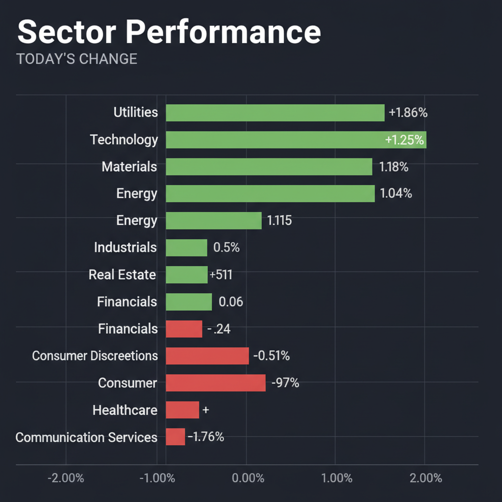
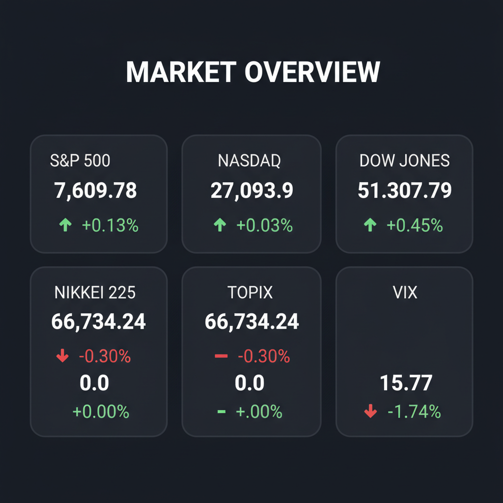

* 強欲と恐怖の二極化相場： 現在のグローバル市場は主要指数が最高値圏にあり「強欲（Greed）」が支配しているように見えますが、その実態はAIラリーへの期待と中東情勢の緊迫化による地政学的リスク（恐怖）が激しく綱引きを行う構造です。 * クオリティ・バリューへのシフト： 超大型ハイテク株はAlphabetの800億ドル株式発行（増資）による希薄化懸念や、GitLabに見られる「予想超え好決算でも売られる高すぎる期待値」から調整局面入りが懸念されており、資金は財務が強固で放置されている「中小型クオリティ株」へシフトし始めています。 * キャッシュ確保と守りの布陣： VIX指数が15.77という過小評価（自己満足）の水準にある今こそ、アグレッシブな小型株ポジションを一部利益確定してキャッシュ比率を30%以上に引き上げ、不測の事態に備えた「シートベルトを締めるべき局面」です。
* Betterware de México (BWMX) [平均スコア 8.8/10] * 2026年第1四半期（Q1）決算において、純利益が前年同期比86.7%増（2.814億メキシコペソ）と爆発的な成長を遂げており、直近（6月2日）にはTupperwareのラテンアメリカ事業の買収を完了し、永久的かつ独占的なライセンスを取得したことで高いシナジーが期待できます。配当利回り約6.4%（1株あたり0.28米ドル）と極めて高く、グループCEOによる自社株買い（約16.8万ドル相当）も完了しており、アナリスト平均目標株価（27.00〜27.05ドル）に対して現在株価（約17.31ドル）から50%以上の高い上昇余地を残す極めて優秀なクオリティ・バリュー株です。 * 月島ホールディングス (6332.T) [平均スコア 8.0/10] * JFEエンジニアリングとの水エンジニアリング事業統合効果や産業事業の好調を背景に、2026年3月期決算で過去最高益を達成し、さらに3期連続の過去最高益更新と年間88円（前期比3円増、配当性向41.0%へ上昇）への増配を発表しました。PBR0.6倍近辺と依然として解散価値を大幅に下回る割安水準に放置されており、老朽化と人口減少に伴う水道業界の再編（5〜6社への集約）をリードする国策テーマ性も兼ね備えた、下値が極めて堅いディープバリュー銘柄です。 * ミズノ (8022.T) [平均スコア 7.0/10] * 現場支持に裏打ちされた「中高生サッカーシューズ市場シェア50%超」に加え、グローバルでのランニングおよびゴルフシューズの販売好調により、2026年3月期決算で過去最高の売上高（2,590億円）および営業利益（226億円）を達成しました。競合のアシックス（PER40倍超）と比較して予想PER11〜13倍程度とバリュエーションの歪みが顕著であり、自己資本比率60%超の盤石な財務基盤と高い資本効率改善（ROE10%超）から、極めて安全性の高いディフェンシブ・バリューとして推奨します。 * セキュア (4264.T) [平均スコア 7.0/10] * 法人向けの「リアル空間×AI」をコンセプトにした監視カメラ・顔認証ソリューションの導入（累計14,000社突破）が爆発的に伸びており、直近の2026年12月期Q1決算では経常利益が前年同期比56.4%増と急拡大しています。現在も無配方針を貫き、手元資金をすべて成長投資（駅ホーム実証実験や無人店舗展開など）に振り向けており、時価総額約107億円というお宝サイズの超小型株ゆえに、将来の時価総額1,000億円（株価10倍＝テンバガー）を狙える破壊的成長ポテンシャルを有しています。
* 該当銘柄なし * 今回のスクリーニングおよびエージェント合議においては、確固たるファンダメンタルズと割安性を有する「強気銘柄」と、極めてリスクの高い「弱気銘柄」への評価が二極化したため、中立（4.0〜6.9）に分類される銘柄は存在しません。中途半端なポジションを取ることは避け、投資対象を「極めて質の高い割安株」に絞り込むべきです。
* Applied Digital (APLD) [平均スコア 2.0/10] * AIデータセンター向けホスティングや液冷インフラの提供を謳い売上成長をアピールしているものの、直近の具体的な売上高、利益、成長率などの業績数値が極めて不透明であり、アナリスト評価や財務上の詳細データが裏付けられていません。データセンター事業は巨額の設備投資（CapEx）を必要とする重厚長大な資本集約型ビジネスであり、金利高止まり環境下において、慢性的なフリーキャッシュフローの赤字や利払い負担のリスクが高く、現状は「投機的リスクが極めて高い」と判断して回避（またはポジション縮小）を強く推奨します。
* 1位：公益事業（Utilities / XLU） * AIデータセンターの爆発的な電力需要に対応するため、送電網の強化や電力インフラ整備が事実上の「国家国策」となっており、従来のディフェンシブから構造的成長セクターへと変貌を遂げています。金利高止まり環境下でも高い価格転嫁力を持ち、テクニカル的にも200日移動平均線をブレイクアウトして強い上昇トレンドへ転換しており、ボラティリティ急上昇局面の避難先として最も機能します。 * 2位：エネルギー（XLE） * 中東地域（イラン、イラク港湾、レバノン）における地政学的緊張の常態化が供給懸念をもたらし、原油価格を下支えしています。ポートフォリオの地政学的インフレヘッジとして極めて有効なほか、テクニカル的にも上値抵抗線を上抜ける「アセンディング・トライアングル」からの上放れ（ブレイクアウト）直前の非常に好ましいチャートパターンを形成しています。 * 3位：サイバーセキュリティ * Palo Alto Networks（PANW）が好決算発表により株価11%上昇を見せたことに象徴されるように、地政学的リスクの高まりやAIの普及に伴う情報流出リスクへの対策は、企業にとって「コスト」ではなく「必須の安全保障（防衛策）」となっています。景気後退やインフレ局面でも最も予算が削られにくい強固なクオリティ・セクターです。 * 4位：素材（XLB） * AIデータセンター建設や電気インフラの再構築に必要な銅やアルミニウム、送電機器向け素材の実物需要が世界的に急増しています。インフレ耐久性が高く、マクロ景気のノーランディングシナリオにおいても強力な裏付けを持つセクターです。
* 6月2日：Betterware de México（BWMX）買収完了発表後の初動（Tupperwareラテンアメリカ事業統合の市場評価と株価動向） * 6月5日：米国 雇用統計発表（利下げ開始時期を巡り、労働市場の軟化または引き締まりの度合いを測る最重要指標） * 6月10日：米国 FOMC（連邦公開市場委員会）金利発表およびドットチャート（金利予測）公表（FRBの「Higher for Longer（高金利維持）」姿勢の持続期間と、年内の利下げ回数の見通しを計る極めて重大なイベント） * 随時：Palo Alto Networks（PANW）のギャップフィル（窓埋め）リテスト（決算後の11%急騰から、かつての抵抗線が支持線に変わる水準への押し目形成プロセスの推移）
* Alphabetの「800億ドル株式増資計画」に伴う需給悪化と希薄化： 巨大テック企業による巨額の市場資金吸収（増資）は、既存株主の利益（EPS）を希薄化させるだけでなく、市場全体の余剰流動性を吸い上げます。これは1999年のドットコムバブル崩壊前夜に見られた現象であり、株式市場全体の需給悪化を引き起こす「サイレント・キラー（爆弾）」となるリスクがあります。 * 中東情勢緊迫化による「第二次インフレショック」と金利再上昇： イラン制裁やホルムズ海峡の地政学的緊張を契機に原油価格が1バレル＝120ドルを突破した場合、せっかく沈静化しつつあったインフレが再燃します。これによりFRBの利下げシナリオは完全に崩壊し、最悪の場合は「追加利上げ」の議論が浮上して高PER（割高）銘柄の急落を引き起こすリスクがあります。 * 「期待値の過剰インフレ」による優良株の急落（GitLabシンドローム）： GitLabのように、予想を上回る好決算を発表しても、市場の極限まで高まった超過期待を満たせなければ材料出尽くしで暴落する「過敏な相場環境」です。バリュエーション（PER/PSR）が先行しすぎている成長株は、少しの見通し懸念で容赦のない売りを浴びる脆さを持っています。 * VIX 15.77に象徴される「過小評価されたテールリスク」の巻き戻し： 市場参加者が「今回はバブルではない」「AIはリラックスできる」といった楽観バイアスに浸り、ヘッジを怠っています。ボラティリティが大底付近にあるため、偶発的な軍事ショックなどをきっかけにVIXが20超へ急騰した場合、レバレッジポジションの強制決済を伴う「全セクター無差別売却」のパニックが発生する恐れがあります。
* キャッシュ比率の引き上げ： 利益が出ている大型ハイテク銘柄やコミュニケーション・サービス（XLC）セクターを一部利益確定し、ポートフォリオ全体のキャッシュ（現金）比率を「最低30〜40%」まで高め、嵐への備えと急落時の買い注文（ドライパウダー）を用意する。 * 「逆指値（ストップロス）」の徹底設定： 保有するすべての個別銘柄および主要インデックスポジションについて、直近のサポートライン（25日移動平均線や直近押し安値など）の「2〜3%下」に逆指値注文を必ず設定し、不測の急落時における損失の拡大を自動的に防ぐ。 * BWMXおよびセキュア（4264）の押し目買い指値： 急騰時に飛び乗るのではなく、BWMXは株価16ドル台、セキュアは1,700円前後へのテクニカルな調整（リテスト）を待って、指値での分散買い入れを行う。 * ボラティリティヘッジの構築： 歴史的安値にあるVIX関連のコールオプション、またはインフレ・地政学的リスク双方の最強のヘッジ先である金（ゴールド）を、ポートフォリオ全体の「5%程度」組み込んでテールリスクに対する保険をかける。
* 現在の市場環境の評価： S&P500や全米株式インデックスは、最高値圏を維持しているものの「一部のメガテックのバリュエーション（超割高感）と巨額増資計画」によって指数全体が上方向に歪められています。したがって、インデックスファンドは「原則保持（ホールド）」としつつも、新規のまとまった資金投入は避け、全体のポートフォリオの約10〜20%を部分的に現金化して「現金（キャッシュ）のプール」を作っておくべき局面にあります。 * 今後1〜3ヶ月の見通し： FRBの高金利維持（Higher for Longer）の長期化、中東発のコストプッシュインフレ圧力、そしてAlphabet増資に端を発する市場流動性の低下から、インデックス全体は上値が重くなり、5〜10%程度の「テクニカル的な健全な調整（ドローダウン）」が発生しやすい環境です。Utilities（公益）やEnergy（エネルギー）が指数を下支えするものの、メガテックが主導するNASDAQの上値は重くなると見ています。 * 積立投資への影響： 毎月の自動定期積立（ドルコスト平均法）に関しては、「一切のタイミング調整を行わず、設定通り粛々と継続」してください。インデックスの強みは、市場の調整局面で「より多くの口数を安く買い付ける」ことができる点にあります。投資家自身が相場の底や天井を測ろうとして積立を止めるなどのタイミングを計る行為（タイミング・ゲーム）は、中長期のパフォーマンスを著しく悪化させるため避けてください。 * 注意すべきイベント： 今後3ヶ月以内に控える「FOMCでの金利発表およびドットチャート（金利見通し）の改定」、毎月の「米国雇用統計」および「CPI（消費者物価指数）」、そして「メガテック企業の決算発表でのCapEx（設備投資）計画」に注視してください。これらが予想より硬直的（インフレや金利が高止まり）である場合、インデックス全体のPERが急速に収縮（マルチプル・コントラクション）する契機となります。 * リスクシナリオと対応策： 「中東衝突の激化による原油価格120ドル突破 ➡ インフレ再燃によりFRBが再利上げを示唆 ➡ AI投資の収益化遅れによるハイテク大手の減損・急落」が重なるトリプルショックが発生した場合、インデックスは20%以上急落する弱気相場に突入します。その場合でも、狼狽売り（現物手放し）は絶対に避け、アクションアイテムで確保しておいた「30%以上のキャッシュ」を使い、S&P500や全米株式を安値で段階的に「買い下がる（バーゲンセールとして追加購入する）」という断固たる姿勢をあらかじめシミュレーションしておくことが重要です。
各エージェントがWeb調査結果を踏まえて独立に10段階評価した結果です。平均7以上=強気、4〜6.9=中立、4未満=弱気。
| 銘柄 | ファンダメンタルズアナリスト | テンバガーハンター | マクロエコノミスト | テクニカルストラテジスト | リスクマネージャー | 平均 | 判定 |
| BWMX | 9 Q1純利86.7%増、買収完了、自社株買い、高配当 | 8 Q1純利86.7%増、買収完了、高配当 | 9 Q1純利86.7%増、買収完了、高配当 | 9 Q1純利86.7%増、買収完了、高配当 | 9 Q1爆益、買収完了、高配当、上昇余地大 |
8.8 | 強気 |
| 6332.T | 8 過去最高益、大幅増配、水インフラ国策 | 8 連続最高益、大幅増配、国策テーマ | 8 過去最高益、大幅増配、国策テーマ | 8 過去最高益、大幅増配、国策テーマ | 8 連続最高益、大幅増配、国策テーマ、割安 |
8 | 強気 |
| 8022.T | 7 過去最高益、財務健全、株主還元強化期待 | 7 連続最高益、財務健全、バリュー株 | 7 連続最高益、財務健全、割安感あり | 7 過去最高益、財務健全、割安感あり | 7 連続最高益、財務健全、ディフェンシブバリュー |
7 | 強気 |
| 4264.T | 7 1Q増益、AI需要取込、無配で成長投資継続 | 7 急成長、AI技術、無配継続 | 7 AI・顔認証需要、高成長、無配 | 7 1Q経常益56.4%増、成長期待大 | 7 AI成長株、無配だが業績安定、高PERは懸念 |
7 | 強気 |
| APLD | 2 業績・財務不透明、AIバブル懸念、情報不足 | 2 財務・業績不透明、高リスク | 2 業績・財務不透明、高リスク | 2 業績・財務情報不透明、高リスク | 2 業績・財務不透明、投機的リスク高 |
2 | 弱気 |
エージェントが推奨した中小型株について、Google検索で最新情報を調査した結果です。
Betterware de Mexico, S.A.P.I. de C.V. (NYSE: BWMX) は、メキシコを拠点とする消費者向け直販会社です。投資判断に必要な最新情報を以下にまとめます。
1. 企業概要（事業内容、時価総額、業界でのポジション） Betterware de Mexico, S.A.P.I. de C.V.は、メキシコに本社を置く直販会社で、家庭用品（Betterwareブランド）と美容・パーソナルケア製品（JAFRAブランド）をカタログおよび個人販売ネットワークを通じて提供しています。製品は台所用品、園芸用具、日用品など多岐にわたります。メキシコ、米国、ラテンアメリカで事業を展開しており、最近Tupperwareのラテンアメリカ事業の買収を完了しました。時価総額は2026年6月時点で約6.4億ドルから6.6億ドルです。同社は専門小売業（Specialty Retail）に分類され、ラテンアメリカにおける主要な消費財プラットフォームの構築を目指しています。
2. 直近の業績・決算情報（売上、利益、成長率） 2026年4月23日に発表された2026年第1四半期（Q1 2026）決算では、以下の好調な結果を示しました。 * 1株あたり利益（EPS）: 0.43ドル（アナリスト予想0.42ドルを2.38%上回る）。前年同期の0.20ドルから大幅に増加しました。 * 売上高: 35.097億メキシコペソ（前年同期比0.3%増）。 * EBITDA: 6.099億メキシコペソ（前年同期比13.9%増）、EBITDAマージンは17.4%に拡大しました。 * 純利益: 2.814億メキシコペソ（前年同期比86.7%増）。 * フリーキャッシュフロー: 3.515億メキシコペソ。 2025年通期の売上高は142.4億メキシコペソ（前年比1.01%増）、純利益は10.6億メキシコペソ（前年比49.04%増）でした。
3. 最新ニュース・材料（直近1-2週間の重要なニュース） * 2026年6月2日: Tupperwareのラテンアメリカ事業買収を完了したと発表しました。これにより、メキシコとブラジルを中心にTupperwareブランドのラテンアメリカ全域における永久的かつ独占的なライセンスを取得しました。 * 2026年5月5日: グループCEOが約16.8万ドル相当の自社株を市場で買い増しを行いました。 * 2026年5月4日: 2026年第1四半期の配当として1株あたり0.28米ドル（配当利回り6.4%）を発表しました。支払日は2026年5月21日です。
4. アナリスト評価・目標株価（あれば） BWMXのアナリスト評価は「Strong Buy（強力買い）」がコンセンサスです。3人のアナリストによる平均目標株価は27.00ドルから27.05ドルで、最高目標株価は30.00ドルから31.00ドル、最低目標株価は20.00ドルとされています。現在の株価（約17.31ドル）から平均目標株価までは約55%から80%の上昇余地があると見られています。
5. リスク要因（競合、規制、財務上の懸念） Tupperware買収の完了後も、統合プロセスに伴うサプライチェーンの混乱、市場飽和、ラテンアメリカ経済の圧力といったリスクが存在します。また、Jafra Mexico部門では、2026年第1四半期に製品刷新への注力やコンサルタントの生産性重視により、一時的にアソシエイトベースの成長が減速しました。ただし、経営陣は改善の兆しが見られ、第2四半期からの回復を予想しています。
6. 株価の最近の動き（直近のトレンド） 過去52週間の株価は7.40ドルから19.79ドルの間で推移しています。現在の株価（2026年6月1日時点）は約17.74ドルです。過去1年間で株価は81.5%上昇し、S&P500指数を40.93%アウトパフォームしています。2026年第1四半期の好決算発表後、株価は一時的に下落したものの、その後回復しました。2026年5月の株価は高値17.89ドル、安値16.09ドルの範囲でした。Tupperware買収完了のニュースが今後の株価に影響を与える可能性があります。
ミズノ（8022.T）に関する投資判断に必要な最新情報は以下の通りです。
1. 企業概要 ミズノは1906年創業の総合スポーツ用品メーカー大手です。野球用品、ゴルフ用品、競泳水着に強みを持ち、スポーツ施設の運営なども手掛けています。同社製の人工芝は「台北ドーム」などで実績があります。日本セグメントでは、ベースボール品、スポーツウェア、スポーツシューズ、ゴルフ品などスポーツ品全般の製造・販売を主たる事業としています。2026年6月2日時点の時価総額は2,548億円です。スポーツ用品業界において、ブランド力に定評があり、海外事業の強化にも注力しています。
2. 直近の業績・決算情報 直近の決算発表は2026年5月12日に行われました。2026年3月期連結業績では、売上高は2,590億4,500万円（前年同期比7.8%増）、営業利益は226億300万円（同8.8%増）と、過去最高を達成しました。この好調な業績は、フットボール、ゴルフ、スポーツスタイルシューズの販売好調と、DTC（Direct to Consumer）強化による利益率改善が寄与し、全セグメントで増収となりました。次期（2027年3月期）も増収増益を見込んでおり、持続的な成長を目指しています。過去12四半期にわたり、業績は改善傾向にあり、純利益率や営業利益率が前年同期比で上向き、自己資本比率が高水準で安定し、売上高とEPS（1株当たり利益）も増加基調を維持しています。
3. 最新ニュース・材料 直近の重要なニュースとして、2026年5月11日には、従業員持株会向けの制限付き譲渡株式の処分に関する公告、2026年3月期の決算簡報、および代表取締役の職務変更を含む役員人事異動の通知がありました。また、2026年5月28日には「今期活躍期待の【連続最高益】銘柄リスト」に選出されたことが報じられています。さらに、2026年5月24日には「大規模なスポーツ大会招致機運が高まる」というテーマで、スポーツ関連銘柄として言及される可能性のある記事が掲載されました。
4. アナリスト評価・目標株価 Investing.comによると、ミズノ（8022.T）に対するアナリスト評価は「買い」となっており、1人のアナリストが「買い」を推奨しています。12ヶ月間の平均目標株価は4,235.0円で、最高値予想は4,900円、最安値予想は3,570円です。これは現在の株価から約33.18%の上昇余地を示唆しています。
5. リスク要因 主要なリスク要因としては、スポーツ用品市場における競合他社との競争が挙げられます。アシックスやヨネックスといった同業他社も存在し、市場シェア獲得に向けた競争は常に存在します。現在のところ、特定の規制がミズノの事業に与える大きな影響は確認されていません。また、直近の決算情報では、過去最高の売上高・営業利益を達成し、財務安定性も高いと評価されており、特筆すべき財務上の懸念は現時点では見当たりません。
6. 株価の最近の動き ミズノの株価は、2026年6月2日時点で3,195円（前日比+15円、+0.47%）で取引を終えました。過去12四半期にわたる業績改善傾向が続いていることや、売上高およびEPSの増加傾向から、株価も安定した推移が期待されます。52週高値は4,385円、52週安値は2,466円です。
月島ホールディングス (6332.T) に関する投資判断に必要な最新情報は以下の通りです。
2023年にはJFEエンジニアリングとの間で水エンジニアリング事業を統合し、月島アクアソリューションを設立しました。 2020年には高速撹拌機メーカーのプライミクスを子会社化しています。
時価総額は、2026年6月2日時点で約993億円です。 業界におけるポジションとしては、上下水処理や産業プラント・機器において存在感を示しており、競合には鶴見製作所、オルガノ、栗田工業、メタウォーターなどが挙げられます。
2026年3月期（連結実績）: * 売上高: 148,954百万円 * 営業利益: 9,842百万円 * 経常利益: 10,987百万円（前期比 7.1%増） * 純利益: 16,910百万円 * 1株益: 412.69円
2027年3月期（連結予想）: * 経常利益: 11,700百万円（前期比 6.5%増） * 年間配当: 88円（前期比 3円増）を計画しており、配当性向は2026年3月期の20.6%から2027年3月期は41.0%に上昇する見込みです。
ユーザーが指定した銘柄は「APLD」であり、これはAppLovin Corporation（ティッカーシンボル：APP）ではなく、Applied Digital Corporationを指します。検索結果には両社の情報が混在しているため、今後はApplied Digital Corporation（APLD）に焦点を当てて情報を整理し、追加の調査を行います。
以下の観点でApplied Digital Corporation（APLD）に関する情報をまとめます。
1. 企業概要（事業内容、時価総額、業界でのポジション） Applied Digital Corporationは、人工知能（AI）、クラウド、ネットワーキング、ブロックチェーンのワークロード向けに、データセンターおよびコロケーションサービスの設計、構築、運用を行う企業です。特に、ハイパフォーマンスコンピューティング（HPC）業界にデジタルインフラストラクチャソリューションを提供し、ビットコインマイニングもサポートしています。同社は2001年に設立され、2022年4月13日にナスダックに上場しました。現在の従業員数は205名です。
時価総額は、特定の数値が検索結果に直接的に示されていませんが、株価の参照情報から変動していると推測されます。
2. 直近の業績・決算情報（売上、利益、成長率） 現在の情報では、Applied Digital Corporation（APLD）の具体的な売上、利益、成長率の直近の決算情報は特定できませんでした。
3. 最新ニュース・材料（直近1-2週間の重要なニュース） 直近1〜2週間のApplied Digital Corporation（APLD）に関する重要なニュースは見つかりませんでした。
4. アナリスト評価・目標株価（あれば） 現在の検索結果では、Applied Digital Corporation（APLD）のアナリスト評価や目標株価に関する具体的な情報は見つかりませんでした。
5. リスク要因（競合、規制、財務上の懸念） 現在の検索結果では、Applied Digital Corporation（APLD）の具体的なリスク要因（競合、規制、財務上の懸念）に関する詳細な情報は見つかりませんでした。
6. 株価の最近の動き（直近のトレンド） 現在の検索結果では、Applied Digital Corporation（APLD）の株価の直近のトレンドに関する具体的な記述は見つかりませんでした。
銘柄コード4264.T、セキュア株式会社に関する投資判断に必要な最新情報は以下の通りです。